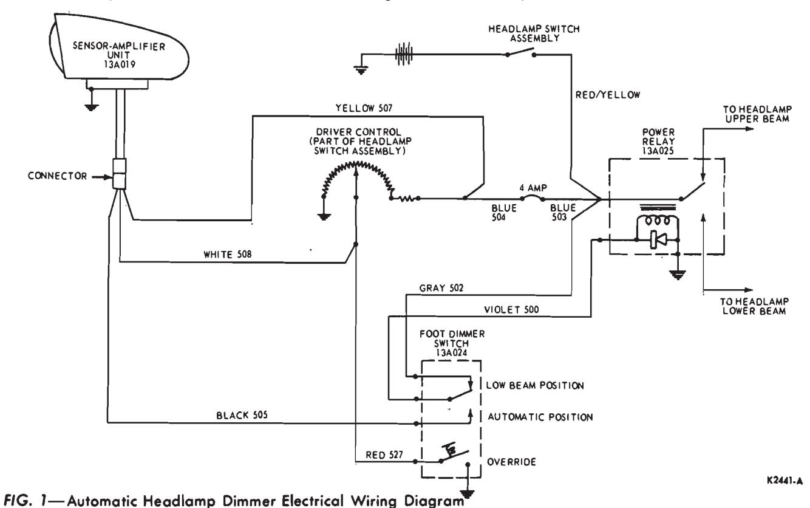
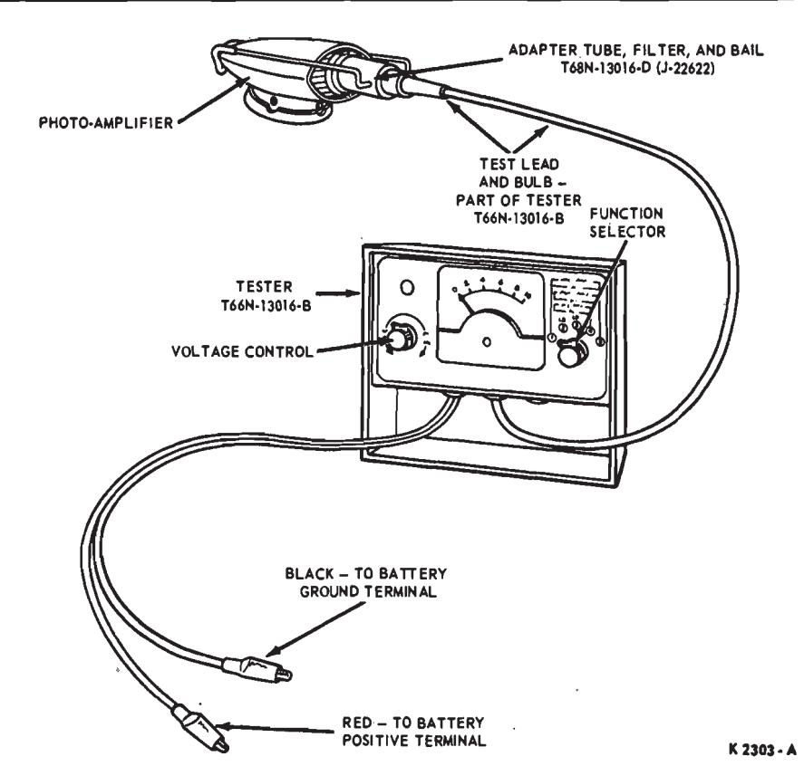
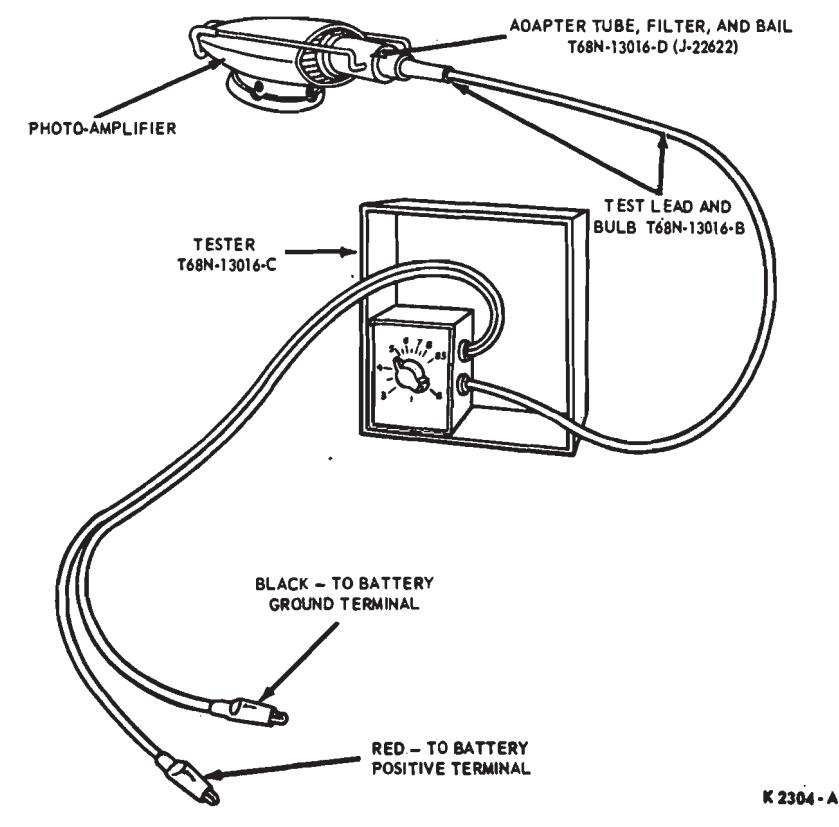

Automatic Headlight Dimmer · 32-05-02
All components of the automatic headlight dimmer should hold their factory adjustments indefinitely. However, an incorrect vertical aim adjustment, loose or incorrect wiring connections or even misunderstanding of the operation of the unit may lead an owner to believe an adjustment or part replacement is necessary.
The following checks should be performed in sequence to determine the cause and correction of trouble and to eliminate unnecessary service work. This unit is transistorized and does not require a warm-up time.
With the vehicle in a lighted area, check the system as follows:
-
Check the position of the driver sensitivity control knob. If it is rotated to the full counterclockwise position, check with the owner to be sure he understands the operation of the unit
-
Operate the engine at fast idle.
-
Set the driver sensitivity control knob at the approximate center of its rotation.
-
Turn the light switch on. The headlights should remain on the lower beam in both positions of the foot switch. If so, proceed to step 5. If not, perform the following checks:
- a. Check for a loose connection at the foot switch, power relay, connector near driver sensitivity control, or in-line connector between the sensoramplifier cable and the interconnecting wire harness. Also check the sensor-amplifier ground wire for proper contact (Continental Mark III only).
- b. Disconnect the red wire (override) from the foot switch (Fig. 1). If the lower beam is obtained in both positions of the foot switch, replace the foot switch.
- c. Disconnect the sensor-amplifier cable at the in-line connector. Fabricate a test lamp from a No. 53 bulb and 2 pieces of wire. Ground one test lamp lead and touch the other to the yellow terminal in the female connector. The test lamp should light. If not, check for a blown fuse or a loose connection at the driver sensitivity control connector or power relay.
- d. Connect one test lamp lead to battery voltage and touch the other lead to the white terminal in the connector. Rotating the driver sensitivity control knob completely counterclockwise should cause the bulb to light. If not, check for a loose connection at the driver sensitivity control connector, a poor solder connection at the driver sensitivity control, or a damaged driver sensitivity control (open circuit).
e. Connect one test lamp lead to battery voltage and touch the other lead to the black terminal in the connector. Operate the foot switch two or three times. The test bulb should light in one position of the foot switch and the headlights should be on lower beam for both positions of the foot switch. If not, check for loose connections at the foot switch or power relay, a poor ground at the power relay, or a damaged foot switch or power relay.
If the problem was not found in step 4, the sensor amplifier is not functioning properly and should be replaced.
-
Place the foot switch in the automatic position and depress slightly. The headlights should switch to the upper beam. If so, proceed to step

-
If not, perform the following checks:
- a. Check for a disconnected red wire at the foot switch.
- b. Disconnect the red wire from the foot switch and ground it to the vehicle body. If the upper beam is obtained, replace the foot switch. If not, connect the wire to the foot switch and check the continuity of the red wire to the 2-way connector near the driver sensitivity control.
- c. Complete continuity of the red wire through the white wire can be checked by disconnecting the sensoramplifier cable from the interconnecting harness at the in-line connector. Using a test lamp (No. 53 bulb), connect one lead to battery voltage and touch the other to the white terminal in the in-line connector. Push down slightly on the foot switch and the bulb should light. If not, check the continuity from the in-line connector to the foot switch.
-
Place the foot switch in the automatic position and cover the sensor-amplifier lens with a black cloth. The headlights should switch to the upper beam. If so, proceed to step 7. If not, disconnect the sensor-amplifier at the in-line connector. If the headlights switch to the upper beam, replace the sensor-amplifier unit.
-
With the headlights on automatic lower beam, rotate the driver sensitivity control all-the-way counterclockwise. The headlights should switch to the upper beam. If so, proceed to step 8. If not, check the driver sensitivity control for a poor connection to ground.
-
If the system responded to steps 4 thru 7 without failure, the unit is functioning properly and all that remains to be checked is the aiming and sensitivity (Section 3).
Dim and Hold Sensitivity Test—Continental Mark III
The individual sensitivity controls for Dim and Hold are located in the sensor-amplifier unit and are adjusted and sealed at the factory. However, a sensitivity check can be made on the Continental Mark III to determine if the sensitivity is within the limits of the driver sensitivity control to provide the driver with at least a minimum acceptable Dim and Hold sensitivity. This will prevent unnecessary replacement of the sensor-amplifier unit and also will verify that the unit is working properly.

Fig. 2 — Continental Mark III Dim and Hold Sensitivity Test Connections—Tester T66N-13016-B
Fig. 3 — Continental Mark III Dim and Hold Sensitivity Test Connections—Tester T68N-13016-CPreparation for Test
- Use an adapter (Tool T68N-13016-D) with the tester to supply a calibrated light source for the test. A filter is glued into the adapter to reduce light to a level consistent with the headlight dimmer sensitivity. The test bulb from the tester plugs into the rear of the adapter. If the bulb burns out, replace it with a No. 53 bulb. Be sure the bulb filament is positioned fairly straight up so that a minimum of the side of the filament is exposed to the end of the bulb. The end of the bulb should be approximately flush with the end of the rubber sleeve.
- Install the tester test bulb assembly into the small diameter hole in the rear of the adapter head. Push the bulb and rubber sleeve into the adapter until they are against the adapter head inner stop.
- Position the adapter on the sensor-amplifier as shown in Figs. 2 and 3. Be sure the adapter is seated snugly around the lens and the bail is snapped tightly into position.
- Connect the long leads from the tester to the battery, the red lead to the positive terminal and the black lead to the ground terminal.
- Cover the sensor-amplifier, adapter, and test bulb with a black cloth.
- Rotate the tester function selector to the No. 1 position.
- Rotate the driver sensitivity control (on headlight switch) counterclockwise to the OFF position.
- Turn the headlights ON and operate the engine at fast idle. The headlights should be on the upper heam
Test Procedure
- Adjust the tester voltage control until the meter reads 7 volts.
- Slowly rotate the driver sensitivity control knob clockwise just to the point where the headlights switch to the lower beam.
- Check the accuracy of the driver sensitivity control by rotating the tester voltage control knob counterclockwise until the headlights switch to the upper beam. Then, slowly rotate the tester voltage control knob clockwise until the headlights switch to the lower beam. The voltmeter should indicate between 6.5 and 7 volts.
- If the voltage reading does not agree, repeat steps 1, 2 and 3.
- Slowly rotate the sensitivity tester voltage control knob counter-clockwise just to the point where the headlights switch to the upper beam. The control knob pointer should register from 1.5 to 2.5 volts less than the reading obtained from switching to the lower beam in step 3.
- If this minimum dim and hold sensitivity can be obtained at any position of the driver sensitivity control knob rotation range, the unit is acceptable for sensitivity. If the dim (switching to lower beam) cannot be adjusted (step 2), replace the sensoramplifier unit. If the dim and hold sensitivity readings are close together (approximately 1/2 to 3/4 volts apart), check for an open driver control circuit to ground. If OK, replace the sensor-amplifier unit.
- Turn the headlights and engine OFF. Disconnect the tester and remove the adapter from the sensoramplifier. Connect any wires that were disconnected during the test.